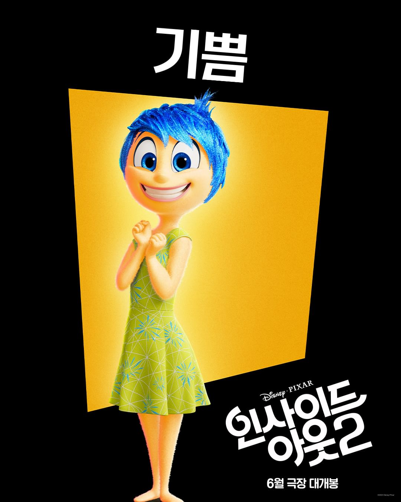
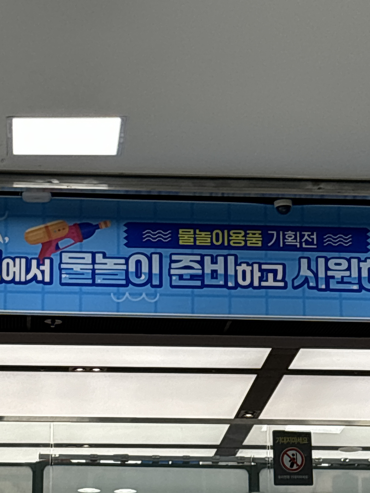
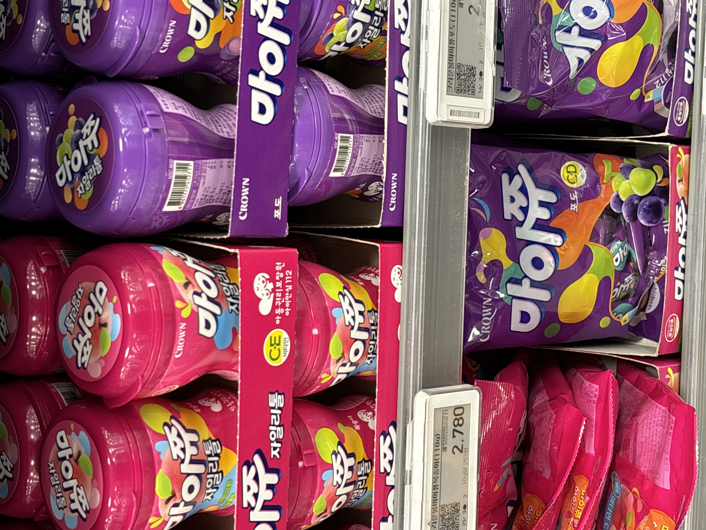
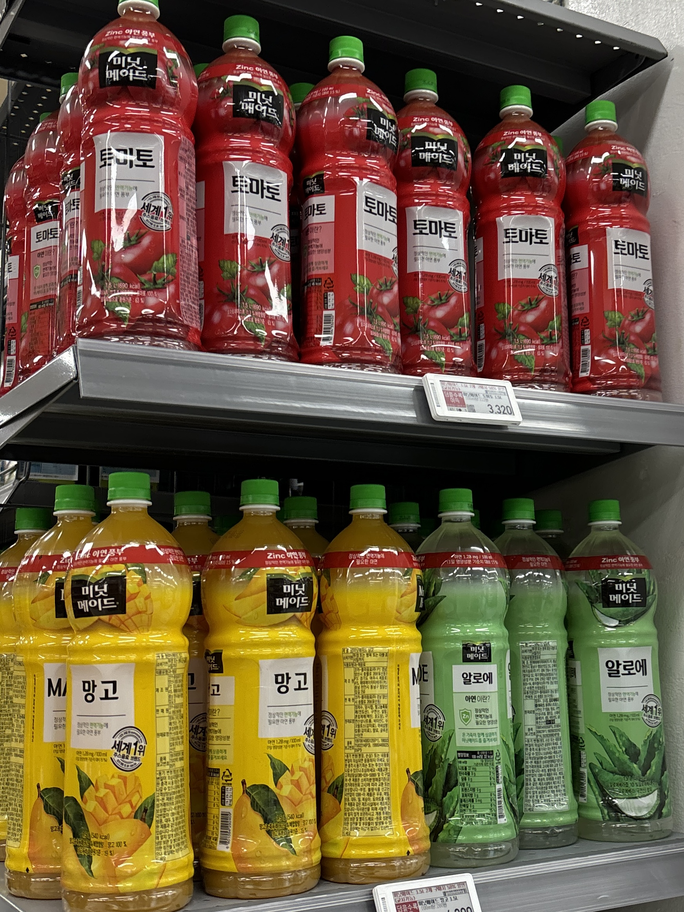
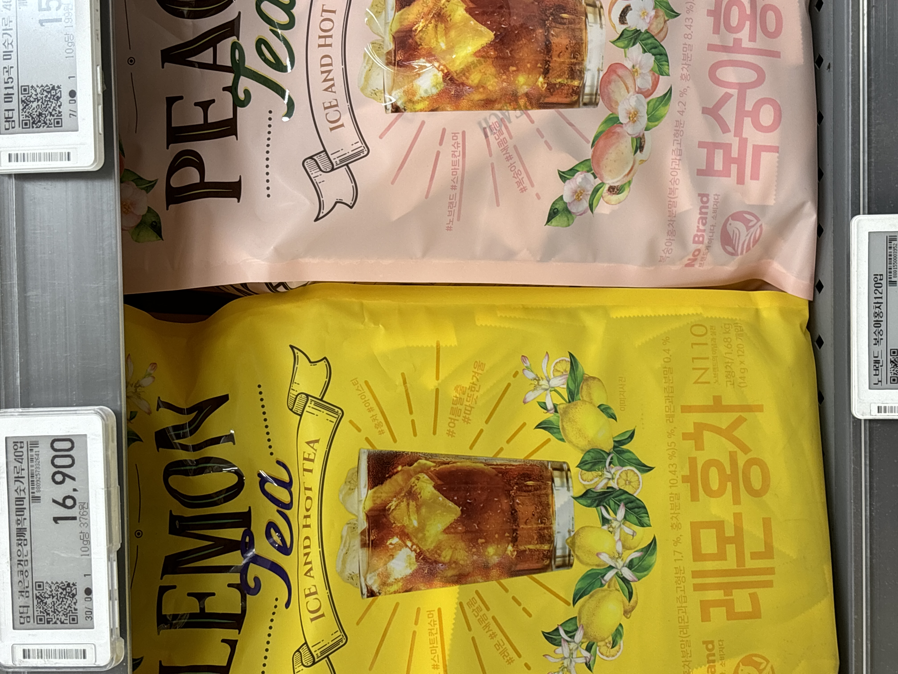

브랜드의 색
색은 브랜드에서 이만큼 중요한 상징적 요소이다. 그래서 브랜드마다 자신만의 상징 색을 가지고 있다. 그 색들로 인해 멀리서도 알아볼 수 있거나 그 색을 보면 자신의 브랜드를 떠올리게 할 수 있다. 첫 번째 사진에서 글을 읽지 않아도 색으로 음료 구분이 가능하다. 두 번째 사진의 맥도날드의 빨간색과 노란색은 길에서 눈길을 이끈다. 특히 위 사진의 맥도날드와 오뚜기의 빨간색은 공복감을 불러일으켜 식욕을 돋우는 색이다. 마지막 사진의 스타벅스는 '회색 빌딩 숲속에서 즐기는 커피 한 잔의 여유, 그리고 평온함.'을 마케팅 주제로 삼아 브랜드 색으로 활용하고 있다.
색의 상징

영화 '인사이드 아웃'의 감정 캐릭터 '기쁨'은 행복과 긍정을 상징하는 노란색이다. 또, 영어권에서 파란색은 우울하다는 뜻으로 사용되기도 한다. 그래서 파란색은 '슬픔'의 색이다. '버럭'의 색은 불, 흥분을 상징하는 빨간색이다.
노란색은 불안과 경고를 상징하고 눈에 잘 띈다. 또, 어린이를 대표하는 색이라 어린이보호구역을 나타내는 표지판에 많이 쓰인다.

여름에 물놀이나 시원함을 강조할 때 물을 떠오르게 하고 시원함을 상징하는 파란색을 많이 사용한다.



식품에서는 자신의 상품의 맛을 나타낼 때 색을 이용한다. 그래서 소비자들이 쉽게 맛을 선택할 수 있다. 보라색은 포도맛, 분홍색은 복숭아 맛, 노란색은 레몬맛, 망고 맛 등 한눈에 알아볼 수 있다.